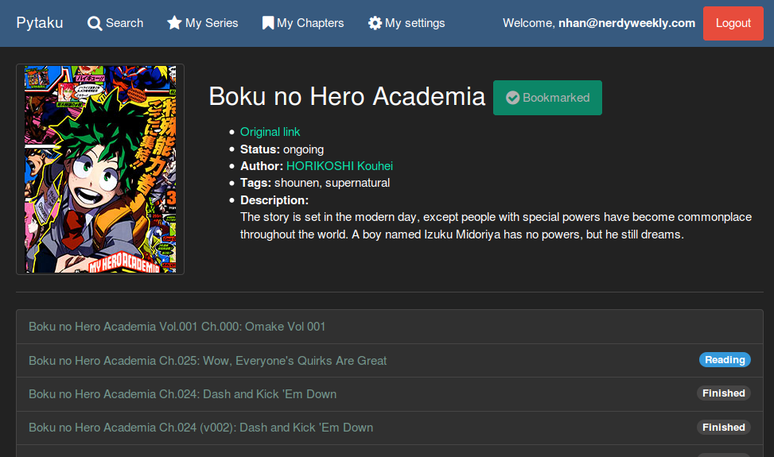
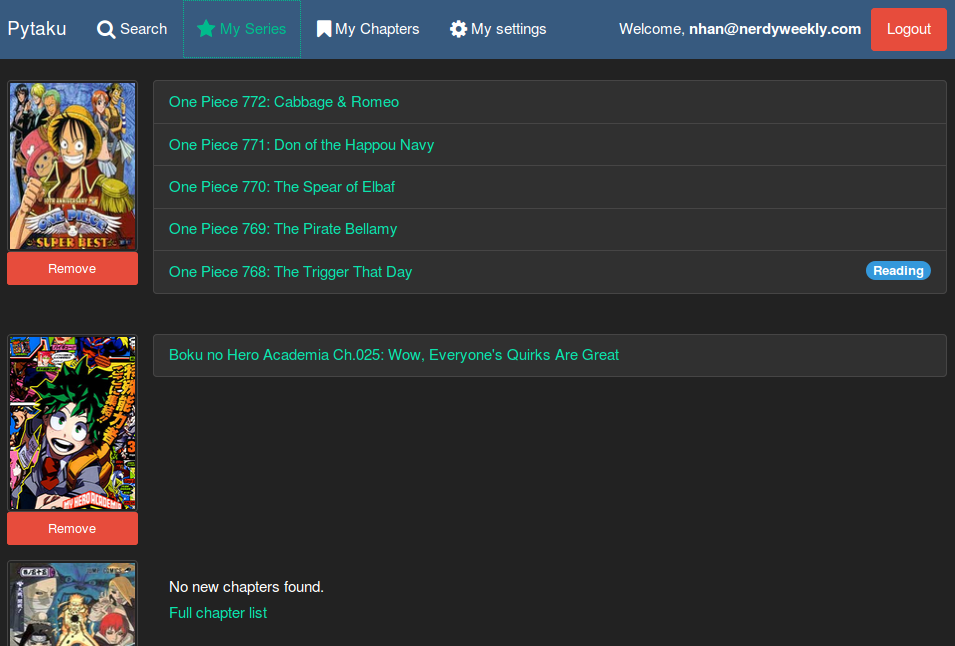
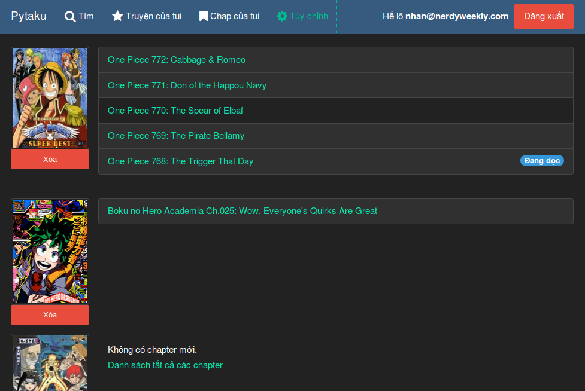

Introducing Pytaku—the only online manga reader you'll ever need
Heads up from 2021! This post describes a previous incarnation of Pytaku which is no longer alive. The new Pytaku is a slightly different thing which is being (relatively) actively developed on sourcehut.
Pytaku is an online manga reader that scrapes data from multiple Vietnamese and English manga sites, giving you one single place to keep track of your reading progress and watch for new chapters with ease. Here are some of the features implemented so far:
Lightning fast, ad-free reading experience
All pages in a chapter are loaded at once, unlike most other sites that only let you view one page at a time, forcing you to reload their distracting advertisements and disrupt you flow (especially for people with not-so-fast internet connection).
And it gets better: using state-of-the-art AJAX dark magic, even navigation between chapters is lightning fast. Loaded pages are cached, so pressing “Back” or “Forward” on your browser happens instantly.
Keep track of your reading progress. Automatically.
Each logged in user will have a nice badge on each chapter showing their progress: (keeping a chapter page open for a few seconds registers it as “reading”, and scrolling to the bottom marks it as “finished”)

Bookmark series to watch for updates
Maintain a list of series so you can have one single place to find out whether there are new chapters for the series you love.

English, Vietnamese and support for other languages
Pytaku comes in English by default and configurable to be in Vietnamese. If you want to translate it to your own language, feel free to follow the example from the English language file and send me a pull request.

Open source and free to run your own site
Pytaku’s source code is released under the free-as-in-freedom GPLv3 and put on GitHub. Since it’s written to be run on Google App Engine which is free for small sites, tech-savvy people can set up their own private pytaku clone in a few minutes. Check out the README file for instructions.
Open to suggestions and (hopefully contructive) criticism
Want another manga site to be included as source? Need a feature that you think many others can benefit from? Feel free to open an issue on GitHub, or give me a shout on the official support chat room.
Give it a spin
Click here to go to the app. Have fun! :) Update: this version of pytaku is
no longer online.